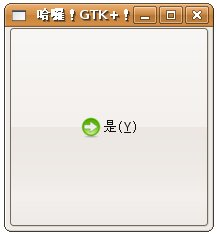
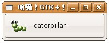

您可以建立具備影像及文字的按鈕，最基本的方式可以透過gtk_button_new_from_stock()，這可以讓您從GTK既有的影像資源中取用影像給按鈕使用，gtk_button_new_from_stock()使用時的參數與出現的影像，可在 Stock Items 查詢。
以實際的例子來說，將 自
訂 callback 函式 中的按鈕產生程式片段改為以下：
button = gtk_button_new_from_stock(GTK_STOCK_YES);
則程式執行時的參考畫面如下所示：

另一個為按鈕創立影像及文字的方式，是使用gtk_button_new()函式建立一個按鈕元件，利用 GtkHBox
與 GtkVBox 建立Box並內含圖片及文字，再將這個Box透過gtk_container_add()加入建立的按鈕元件之中，下面這個程式是一個簡單的示範：
#include <gtk/gtk.h>
GtkWidget* buttonWithImage(gchar *filename, gchar *text) {
GtkWidget *box;
GtkWidget *label;
GtkWidget *image;
box = gtk_hbox_new(FALSE, 5);
gtk_container_set_border_width(GTK_CONTAINER(box), 2);
image = gtk_image_new_from_file(filename);
label = gtk_label_new(text);
gtk_box_pack_start(GTK_BOX(box), image, FALSE, FALSE, 5);
gtk_box_pack_start(GTK_BOX(box), label, FALSE, FALSE, 5);
gtk_widget_show (image);
gtk_widget_show (label);
return box;
}
int main(int argc, char *argv[]) {
GtkWidget *window;
GtkWidget *button;
GtkWidget *box;
gtk_init(&argc, &argv);
window = gtk_window_new(GTK_WINDOW_TOPLEVEL);
gtk_window_set_title(GTK_WINDOW(window), "哈囉！GTK+！");
gtk_window_set_default_size(GTK_WINDOW(window), 200, 50);
button = gtk_button_new();
box = buttonWithImage("caterpillar.gif", "caterpillar");
gtk_container_add(GTK_CONTAINER(button), box);
gtk_container_add(GTK_CONTAINER(window), button);
g_signal_connect(GTK_OBJECT(window), "destroy",
G_CALLBACK(gtk_main_quit), NULL);
gtk_widget_show(window);
gtk_widget_show(button);
gtk_widget_show(box);
gtk_main();
return 0;
}
執行的結果畫面如下所示：

|
|